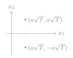
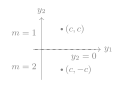

Seminar 6. Waveforms and coordinates
The seven questions of the session, each with three options and one correct answer. Work out your answer before opening a solution.
Two equiprobable messages m\in\{1,2\} are transmitted with the real waveforms below, where a>0 and T>0. Both waveforms are zero outside [0,2T). The first has level a in both slots, and the second has level a in the first slot and -a in the second.
We use the ordered pair (\phi_1,\phi_2), where \phi_1(t)=1/\sqrt T on [0,T) and \phi_2(t)=1/\sqrt T on [T,2T), each zero elsewhere. The receiver observes Y(t)=s_m(t)+Z(t), with zero-mean white Gaussian noise independent of the message and two-sided spectral density \No/2>0. By Section 4.4 of the notes, the projections Z_i=\langle Z,\phi_i\rangle are independent zero-mean Gaussians of variance \No/2. The average energy per information bit is \Eb. Exact expressions in terms of \erfc are sufficient.
Question 1. Which statement about \phi_1 and \phi_2 is correct? Justify it by calculating both energies and their inner product.
(a) They are orthogonal, but neither has unit energy.
(b) They are orthonormal.
(c) They have unit energy, but their inner product is 1.
Show solution
The correct answer is (b) ★
By Section 4.1 of the notes, each pulse has energy \int_0^T\tfrac1T\drm t=1, with a time shift for \phi_2. Their supports are disjoint, so their product is zero and \langle\phi_1,\phi_2\rangle=0: the pair is orthonormal. The answer is (b).
Question 2. What are the coordinate vectors \x(1) and \x(2) in the basis (\phi_1,\phi_2)? Obtain them by integration and place the two codewords in the signal space spanned by \{\phi_1,\phi_2\}.
(a) \x(1)=(a,a) and \x(2)=(a,-a).
(b) \x(1)=(a\sqrt T,a\sqrt T) and \x(2)=(-a\sqrt T,a\sqrt T).
(c) \x(1)=(a\sqrt T,a\sqrt T) and \x(2)=(a\sqrt T,-a\sqrt T).
Show solution
The correct answer is (c) ★
Section 4.2 gives x_i(m)=\langle s_m,\phi_i\rangle. On the first slot both signals have level a, so \begin{equation*} x_1(m)=\int_0^T\tfrac a{\sqrt T}\drm t=a\sqrt T. \end{equation*} On the second slot the levels are a and -a, so the same integral over [T,2T) gives x_2(1)=a\sqrt T and x_2(2)=-a\sqrt T. The points share their first coordinate. The answer is (c).

Question 3. What amplitude a gives a prescribed average energy per information bit \Eb>0? Calculate both signal energies to justify it.
(a) \sqrt{\tfrac{\Eb}{2T}}.
(b) \sqrt{\tfrac{\Eb}{T}}.
(c) \sqrt{\tfrac{\Eb}{4T}}.
Show solution
The correct answer is (a) ★
Each signal has squared amplitude a^2 on an interval of length 2T, so its energy is 2a^2T, by Section 4.1. Both messages have that energy and each conveys one information bit, because there are two equiprobable messages. Thus Section 4.3 gives \begin{equation*} \Eb=\tfrac12(2a^2T+2a^2T)=2a^2T. \end{equation*} The positive root is a=\sqrt{\Eb/(2T)}. Dividing by two slots would give energy per coordinate, not per information bit, and adding the two energies would count two bits as one. The answer is (a).
Question 4. What is the squared distance d^2=\|s_1-s_2\|^2, in terms of \Eb? Verify it both from the coordinate vectors and from the waveforms.
(a) \Eb.
(b) 2\Eb.
(c) 4\Eb.
Show solution
The correct answer is (b) ★
By Section 4.2 the difference vector (0,2a\sqrt T) gives \begin{equation*} d^2=4a^2T=2\Eb. \end{equation*} The waveform difference is zero in the first slot and 2a in the second, which independently gives \begin{equation*} d^2=\int_T^{2T}(2a)^2\drm t=4a^2T. \end{equation*} The answer is (b).
Question 5. The receiver computes Y_i=\langle Y,\phi_i\rangle=x_i(m)+Z_i for i=1,2 and keeps the vector \Y=(Y_1,Y_2). What is the difference \|\Y-\x(1)\|^2-\|\Y-\x(2)\|^2, with c=a\sqrt T? Expand both squared distances in terms of Y_1 and Y_2 to obtain it.
(a) -4cY_1.
(b) -4c(Y_1+Y_2).
(c) -4cY_2.
Show solution
The correct answer is (c) ★
By question 2, \x(1)=(c,c) and \x(2)=(c,-c), so by Section 4.2 \begin{align*} \|\Y-\x(1)\|^2&=(Y_1-c)^2+(Y_2-c)^2,\\ \|\Y-\x(2)\|^2&=(Y_1-c)^2+(Y_2+c)^2. \end{align*} The first terms coincide, and expanding the second ones gives \begin{equation*} \|\Y-\x(1)\|^2-\|\Y-\x(2)\|^2=-4cY_2. \end{equation*} The difference does not involve Y_1. The answer is (c).
Question 6. When does the optimal receiver decide message 1? Justify it graphically and from your answer to question 5.
(a) When Y_2>0.
(b) When Y_1+Y_2>0.
(c) When Y_1>0.
Show solution
The correct answer is (a) ★
For equiprobable messages, Section 4.6 gives the nearest-point rule. By question 5, \|\y-\x(1)\|^2-\|\y-\x(2)\|^2=-4cy_2, so message 1 is nearer, and is decided, exactly when y_2>0. Graphically, the boundary is the perpendicular bisector of the segment from (c,c) to (c,-c), which is the horizontal axis, with message 1 above it. The first coordinate plays no role: it has the same mean c under both messages and drops out of the difference of question 5. The answer is (a).

Question 7. What is the average error probability P_{\rm e}? Express it in terms of \Eb and \No.
(a) \tfrac12\erfc\bigl(\sqrt{\Eb/\No}\bigr).
(b) \tfrac12\erfc\bigl(\sqrt{\Eb/(4\No)}\bigr).
(c) \tfrac12\erfc\bigl(\sqrt{\Eb/(2\No)}\bigr).
Show solution
The correct answer is (c) ★
Given message 1, the error event from question 6 is Z_2<-a\sqrt T. Its variance is \No/2 by the preamble, and the other message has the same error probability by symmetry. The Gaussian tail of Topic 1 gives \begin{equation*} P_{\rm e}=\tfrac12\erfc\bigl(a\sqrt{T/\No}\bigr). \end{equation*} Using question 3, this becomes \begin{equation*} P_{\rm e}=\tfrac12\erfc\bigl(\sqrt{\Eb/(2\No)}\bigr). \end{equation*} Equivalently, the distance formula of Section 4.6 with d^2=2\Eb gives the same result. The answer is (c).